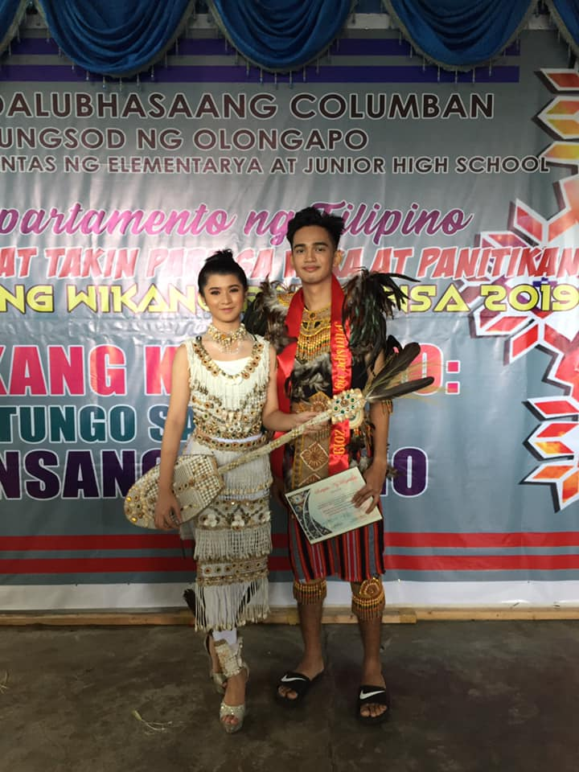
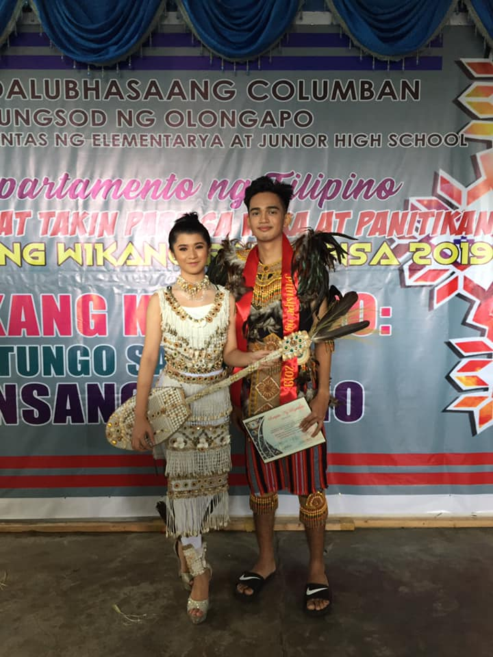

Columban's Annual Buwan ng Wika Celebration


|
|
Columban College Inc. |
Events Programs Admission About Home |
|

|
Columban College, Inc.Columban College is a Catholic institution dedicated to serve the needs of the city and the surrounding provinces of Zambales and Bataan. |
Contact UsMain Campus#1 First St., New Asinan, Olongapo City (047) 222-3329 Barretto Campus Rizal Street Extension.Bo,Barretto,Olongapo City (047) 222-9360 Email: info@columban.edu.ph |
Social Media
|